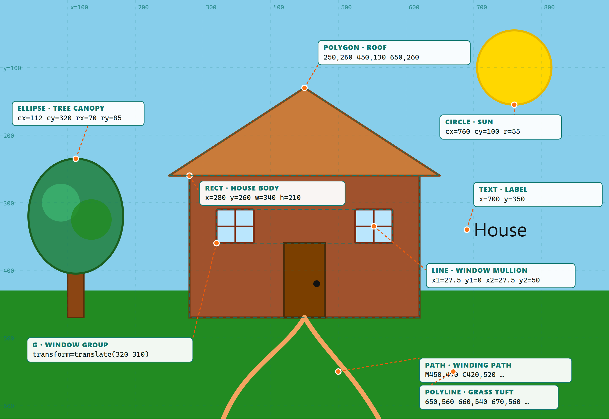
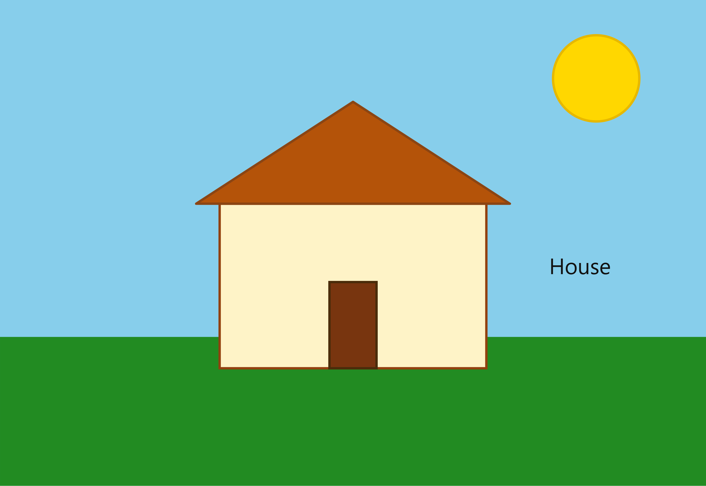
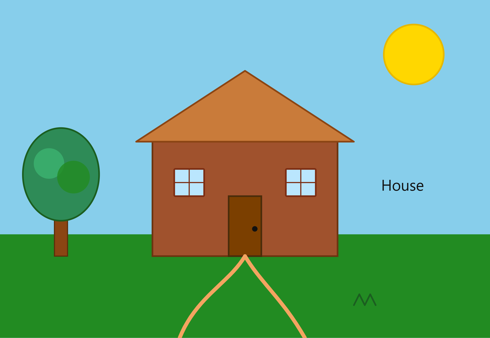
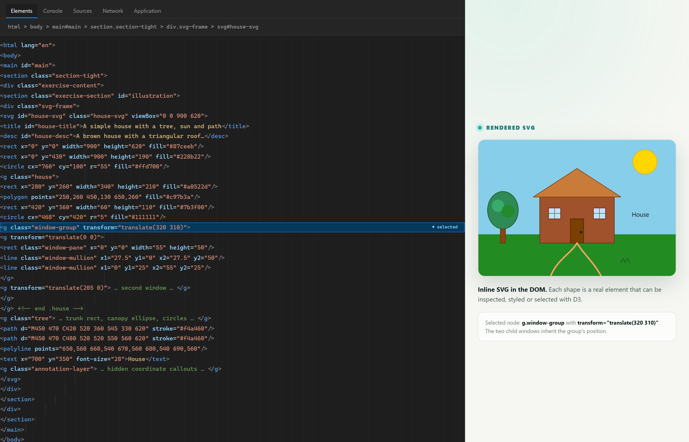

Week 4 · Exercise 4.1
Draw SVGs: a simple house.
A house, tree, sun and winding path built from SVG primitives. The drawing is deliberately simple: every shape has a purpose, and the two windows are grouped so they can be moved and styled together.
Customisation: the starting sketch was a rectangle house with a
triangular roof, a door, a sun and a text label. The final drawing changes the colours,
adds a tree, a winding path and a grass tuft, and puts the two windows into one
<g class="window-group"> positioned with
transform="translate(320 310)". Use the buttons above to reveal the
coordinate grid or highlight the group.
The SVG coordinate system
SVG coordinates start at (0, 0) in the top-left corner. The x-axis grows
to the right and the y-axis grows downwards. The annotated screenshot below labels a
sample of each shape type and shows how the numbers in the code map to the drawing.

Starting sketch vs. final drawing
The first sketch used only a background, a sun, a rectangle, a triangle roof, a door and a text label. The final version keeps the same simple coordinate system but adds a tree, a winding path, two windows and a grass tuft.


Two windows, one group
The two windows are structurally identical. Putting them inside one group means the
fill, stroke and mullion styling can be defined once. Each window is then positioned
with a nested translate() inside the group.
<g class="window-group" transform="translate(320 310)">
<g transform="translate(0 0)">
<rect class="window-pane" x="0" y="0"
width="55" height="50"/>
<line class="window-mullion" x1="27.5" y1="0"
x2="27.5" y2="50"/>
</g>
<g transform="translate(205 0)">
<!-- the same window, 205 units to the right -->
</g>
</g>
Why group them? The group is a single styling target. Adding a class
to the group (or using a CSS selector such as .window-group .window-pane)
changes both windows at once, and the nested transforms move them together.
Open the browser's Elements panel
Open the page in a browser, press F12 (or right-click → Inspect), and expand
the <svg> element. The DOM shows the inline shapes in the order they
are drawn: background, ground, sun, house, windows, tree, path, grass and text.

<g class="window-group"> is visible inside the house group, and
the annotation layer remains in the DOM but is hidden with CSS.
Shape checklist
Every shape type required by the exercise appears at least once. The coordinates are in the same order as the SVG attributes.
| Element | Example in the drawing | What the coordinates mean |
|---|---|---|
| <rect> | House body, door, ground | x, y is the top-left corner; width, height extend right and down. |
| <circle> | Sun, door knob, tree highlights | cx, cy is the centre; r is the radius. |
| <ellipse> | Tree canopy | cx, cy is the centre; rx, ry are the horizontal and vertical radii. |
| <line> | Window mullions | x1, y1 is the start; x2, y2 is the end. |
| <polyline> | Grass tuft | A list of points connected by straight lines; the shape is not closed. |
| <polygon> | Roof | A list of points connected and closed automatically. |
| <path> | Winding path | M moves, C draws a cubic curve, and the stroke follows the route. |
| <text> | “House” label | x, y is the text anchor; text-anchor controls alignment. |
| <g> | Windows, house, tree | A container. transform moves, scales or rotates all children together. |
AI use
The first sketch was generated with the help of an AI coding assistant. The final drawing was then customised: colours were changed, a tree, path and grass were added, the windows were grouped, and the text label was repositioned. The annotation overlay, screenshots and explanatory text were produced for this submission. This note is repeated in the project README so the use of AI is clear.
Academic integrity: AI was used as a drafting and debugging aid, not as a substitute for understanding the code. The student can explain every element, coordinate and transform in the drawing.